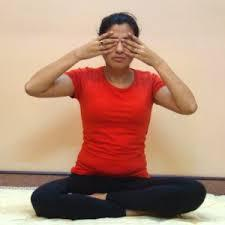

1. Take a comfortable seated position with your eyes closed and back straight. (Refer to the image given alongside)
2. Close your right hand in a gentle fist in front of your nose, then extend your thumb, ring finger and little finger.
3. Gently close your right nostril with your thumb. Inhale slowly through your left nostril.
4. Close your left nostril with your ring finger, open your right nostril and exhale slowly through it. Inhale through the right nostril and then close it with your thumb.
5. Open your left nostril and exhale slowly throught it.
6. Now repeat from step 2.
Continue the process for about 10 minutes.
Ocean Breath (Ujjayi Pranayama)
Steps:
1. Take a comfortable seated position with your eyes closed and back straight. (Refer to the image given alongside)
2. Inhale through your nose, then open your mouth and exhale slowly, making a "haa" sound.
3. Try this a few times, then close your mouth, keeping the back of your throat in the same shape you use to make the "ha:, as you exhale through the nose.
Start by practising Ujjayi Pranayama for minutes. For deeper meditation, increase your time to 15 minutes.
Humming Breath (Brahmari Pranayama)

Steps:
1. Take a comfortable seated position with your eyes closed and back straight.
2. Place both your little fingers above your lips and below the nostrils, the index fingers and the middle fingers on your eyes, the ring fingers on your eyebrows, close your ears with the thumbs. (Refer to the image given alongside)
3. Close your mouth, inhale throught the nose, and then exhale through the nose, making a humming sound.
Repeat the process 10 times.
You can watch these videos for better understanding.